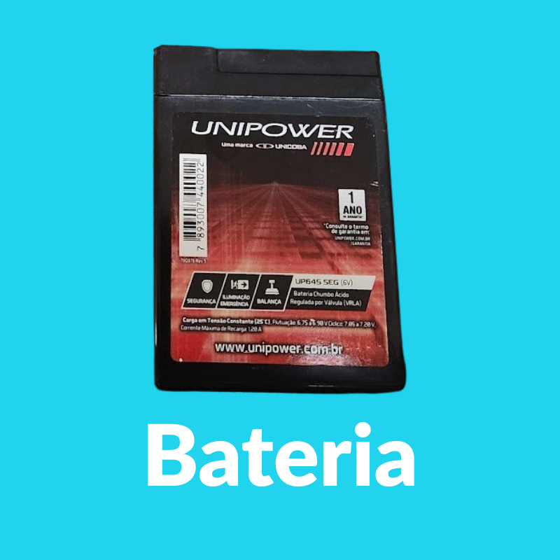

Sobre o Projeto
Projeto escolar para monitorar dados meteorológicos (temperatura, umidade, pressão, pressão ao nível do mar e ponto de orvalho) utilizando ThingSpeak. Este painel oferece visual moderno, temas claro/escuro, alertas e gráficos com gradientes para análise intuitiva.
